Click any piece to view in full detail

Cosmic Bloom
An explosion of stellar color where galaxies are born and dreams take shape. The universe whispered, and the canvas answered.
Abstract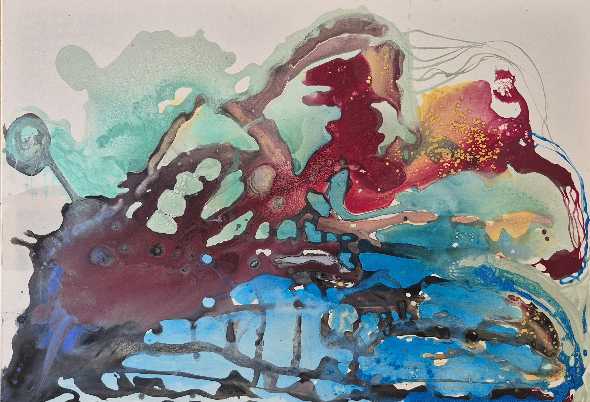
Cancers in Love
Two souls intertwining in liquid fire. Where passion meets vulnerability, and the heart finds its mirror in another.
Abstract
Above the Clouds
A dreamscape where gravity surrenders to imagination. Layers of color dissolve into the infinite, capturing the weightless moment between earth and sky.
Abstract
Beautiful Poet
The silent rhythm of words made visible. A portrait of creativity unbound, where ink and emotion merge into timeless expression.
Abstract
Blues
The color of longing, painted in layers that whisper rather than shout. A meditation on the spaces between notes and the silence within sound.
Abstract
The Storyteller
Every line is a sentence, every color a chapter. The ancient art of narrative, reimagined through the lens of pure emotion and form.
Abstract
Tree Monster
Where the forest whispers back. A playful collision of nature and imagination — the wild spirit that refuses to be tamed.
Abstract
Wave
The ocean's eternal breath. A single moment of liquid power frozen forever, where chaos finds its perfect form.
Abstract
Young Visionary
Eyes that see tomorrow. The unguarded hope of youth, painted in the bold strokes of someone who knows the world is still being made.
Abstract
Chilling
The art of stillness. A meditation on pause — where time softens and the quiet becomes loud with meaning.
Abstract
Work
Creation in progress. The raw, unfiltered moment where idea meets execution — messy, honest, and alive.
Abstract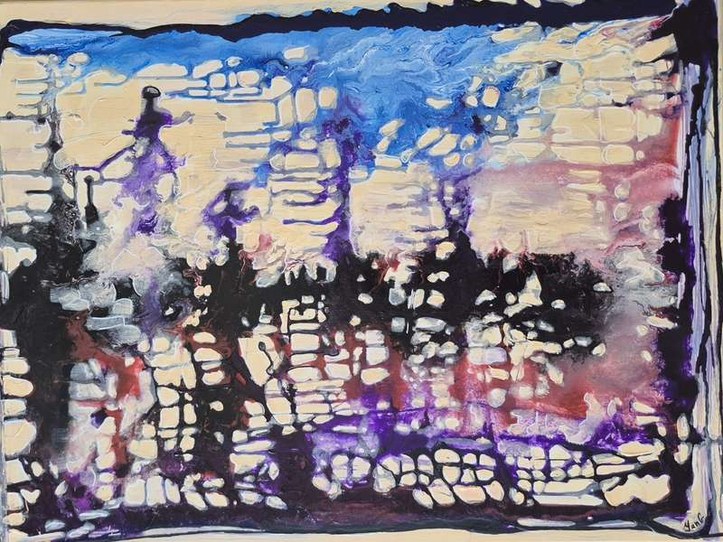
Stormy Day
When the sky throws its tantrum and the earth listens. A symphony of grays and sudden light — the beautiful violence of change.
Abstract
Storm in the Sea
The ocean's rebellion. Where water becomes weapon and poetry, crashing against the boundaries of what we thought possible.
Abstract
Purple Haze
A fog of violet dreams where reality softens at the edges. The moment between waking and sleeping, captured in pigment.
Abstract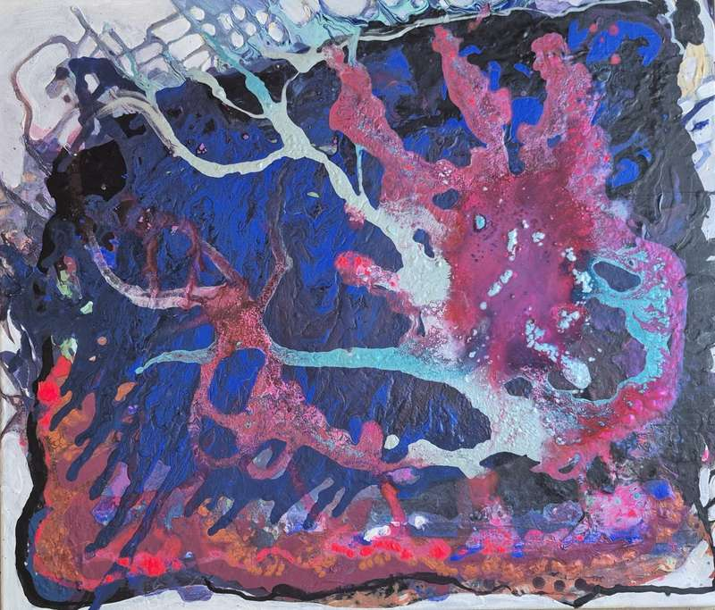
Octopus
Eight arms reaching into the unknown. Intelligence without bones, reaching, grasping, becoming — the alien intelligence of the deep.
Abstract
Green Day
When the world decides to breathe again. The color of renewal, of spring's stubborn return, of life refusing to quit.
Abstract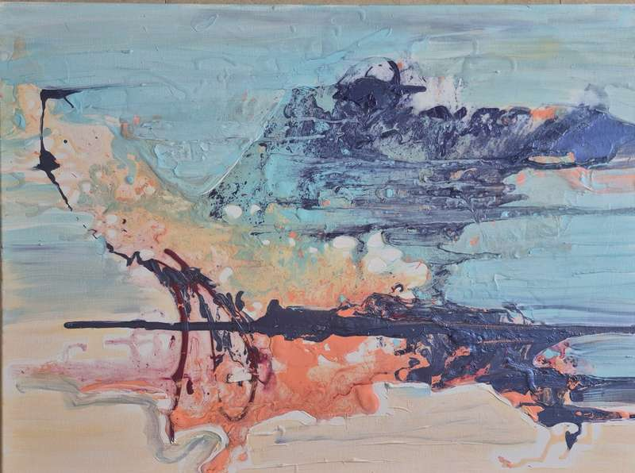
Horizon
The line where earth and sky negotiate their endless separation. A meditation on distance, desire, and the places we can never quite reach.
Abstract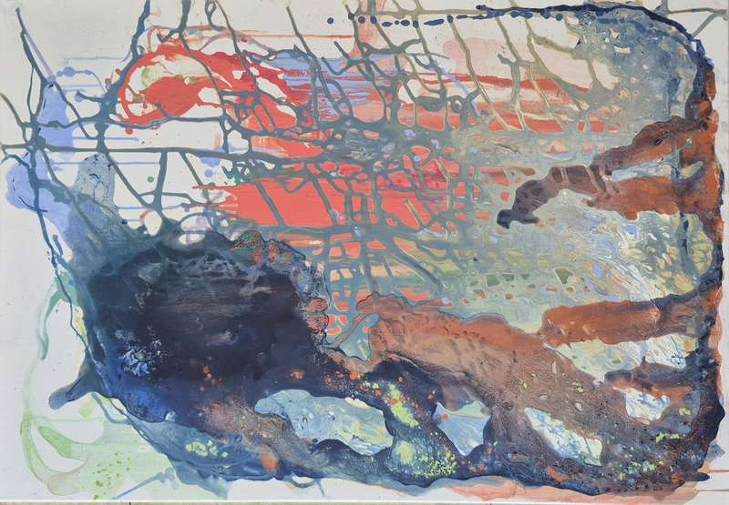
Fluid Motion
Dance without bones, movement without muscle. The liquid grace of things that refuse to be still, captured in eternal flow.
Abstract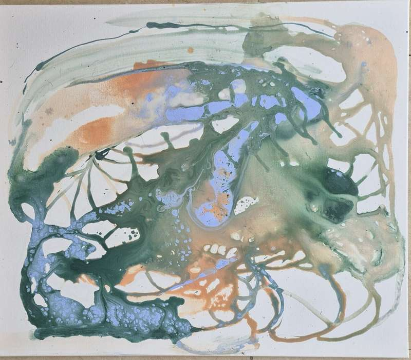
Earth Tones
The palette of the patient planet. Browns and ochres that remember ancient forests, forgotten rivers, and the slow wisdom of stone.
Abstract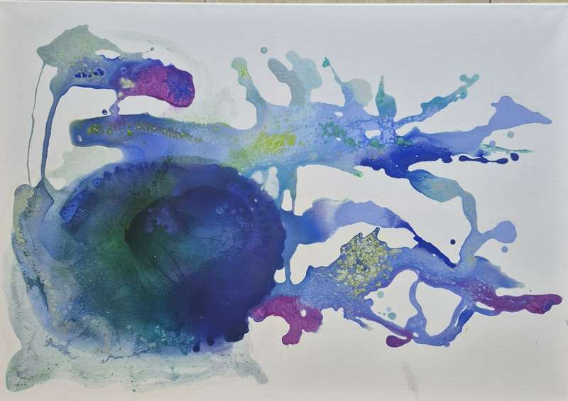
Deep Sea
Where light goes to die and bioluminescence takes over. The crushing beauty of the abyss, where pressure creates diamonds of color.
Abstract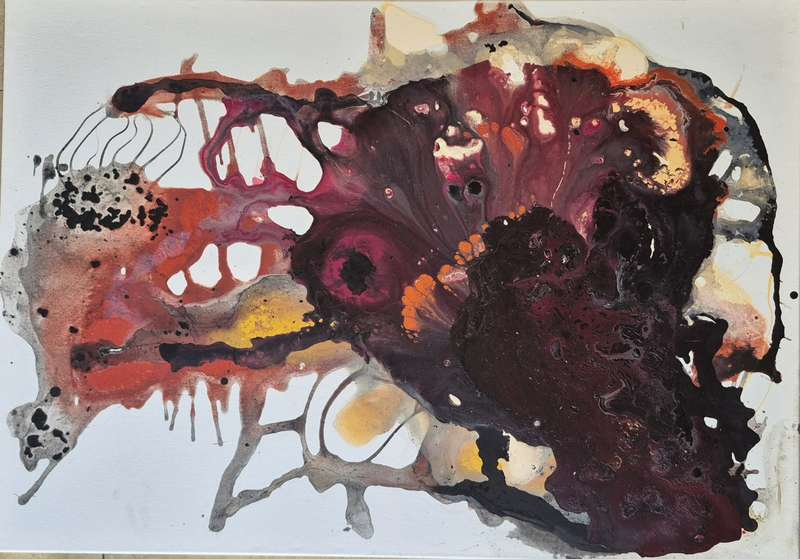
Dark Matter
The invisible architecture of the universe. What holds galaxies together but cannot be seen — painted into visibility at last.
Abstract
City Life
The rhythm of concrete and neon. Millions of stories stacked vertically, each window a frame, each street a pulse.
Abstract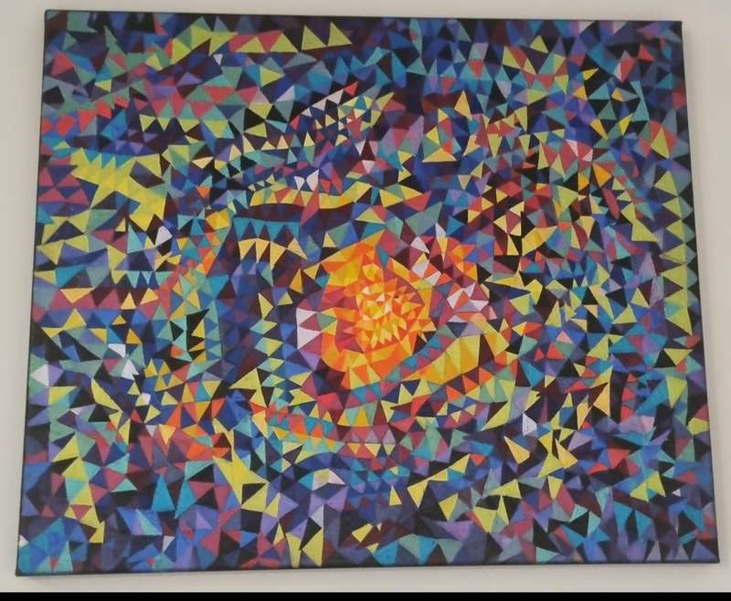
M.T.F.H.
Angles that argue and agree. The secret geometry of hidden structures, where mathematics becomes emotion and lines tell stories.
Geometric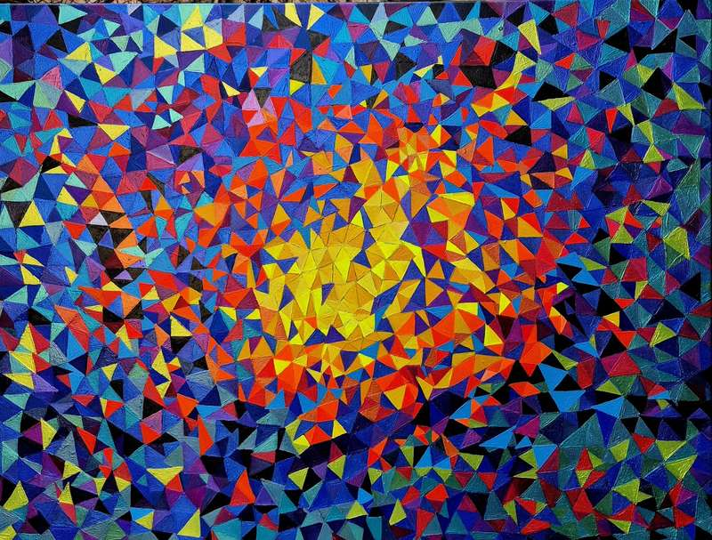
MTOH
Codes within codes. A visual language that speaks in shapes, where every triangle is a word and every intersection is meaning.
Geometric
Saved
Rescue in right angles. The moment order saves chaos from itself, and geometry becomes salvation.
Geometric
Sky
The heavens deconstructed into planes and polygons. What happens when clouds become crystalline and stars align in grids.
Geometric
Piero
A tribute to the masters of perspective. Where Renaissance precision meets modern boldness, and the past becomes present.
Geometric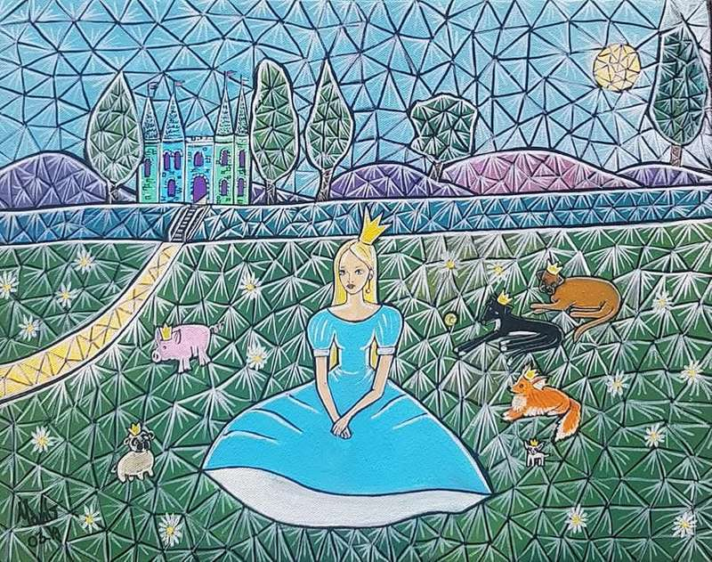
Kingdom
Rule by right angles. A realm built on the foundations of order, where every subject knows its place and beauty is law.
Geometric
Love Will Tear Us Apart
The geometry of breaking. Where parallel lines finally meet, only to prove they were never meant to.
Geometric
Four Seasons
Time's architecture. The cycle of change captured in crystalline form — spring's angle, summer's plane, autumn's facet, winter's edge.
Geometric
Exploration
Mapping the unknown with compass and triangle. The geometry of discovery, where every new angle reveals a world.
Geometric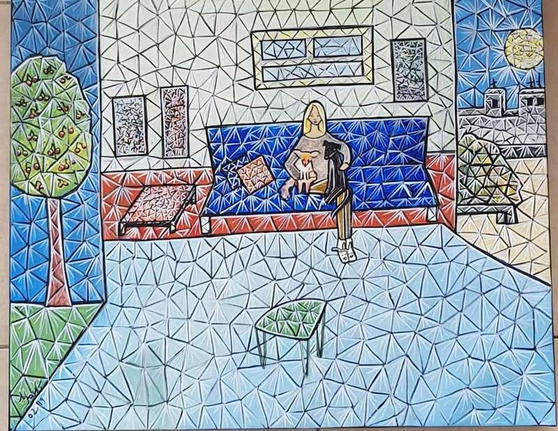
Family
The shapes that hold us together. Interlocking lives, supporting angles, the geometry of belonging.
Geometric
Favorite Nest
Home as hexagon. The architecture of comfort, where safety is built one careful angle at a time.
Geometric
Dog's Life
Loyalty in lines. The uncomplicated geometry of devotion, where every angle points to love.
Geometric
Dragon Eye
The gaze of myth, reconstructed. Ancient power seen through the lens of modern precision — fear made beautiful.
Geometric
Cosmos
The universe as crystal. Stars arranged in patterns we are only beginning to understand, beauty in the blueprint of existence.
Geometric
Broken Heart
The geometry of fracture. Where pain becomes pattern, and every crack is a new beginning.
Geometric
Day and Night
The eternal negotiation. Light and shadow in geometric balance, each defining the other through opposition.
Geometric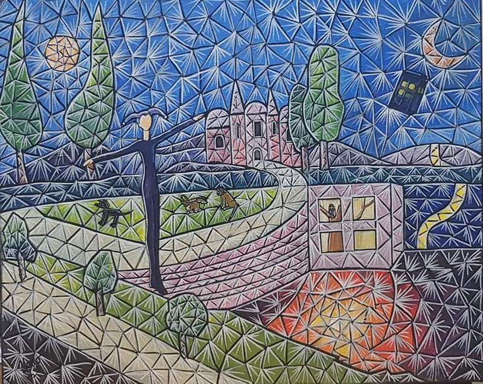
Daydreams
Thoughts taking shape. The impossible geometry of imagination, where parallel lines meet and circles have corners.
Geometric
Walk with Lobsters
Surreal companions on life's shore. A dreamwalk through the impossible — where the ordinary becomes extraordinary.
Geometric
Cat
Independence in angles. The feline grace of geometry, where every curve is calculated and every stretch is sacred.
Geometric
Elephant
Wisdom in every dot. Thousands of points converge into majestic presence — patience made visible, memory given form.
Pointillism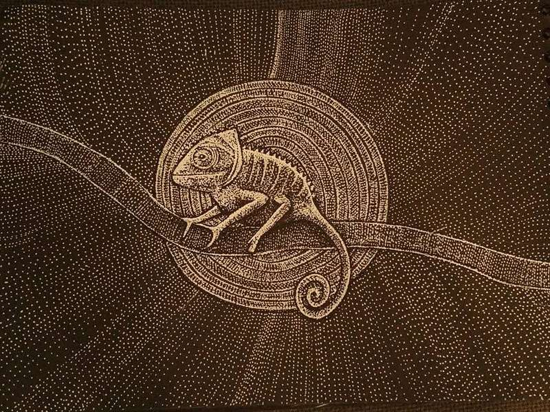
Chameleon
The master of becoming. Nature's ultimate shapeshifter, captured in a hypnotic dance of pattern and perception.
Pointillism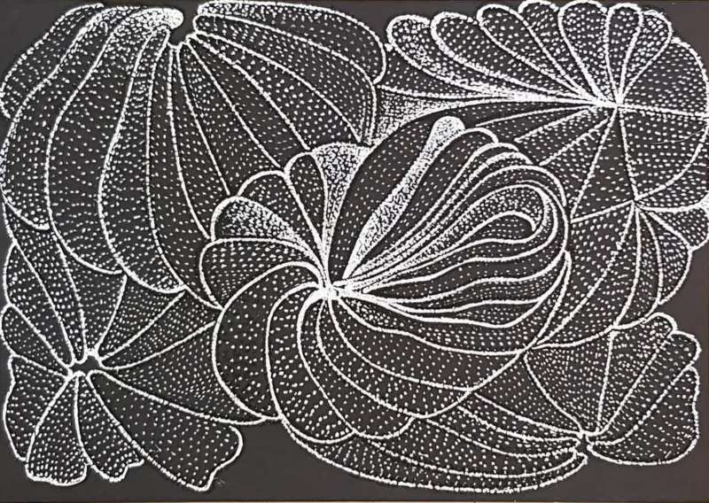
Cabbage
Ordinary magic in dots. The humble vegetable transformed into a universe of texture, where every point is a world.
Pointillism
B-Boy
Frozen motion. The explosive energy of street culture captured in photographic truth — every muscle tells a story of defiance and grace.
RealismBeautiful Poet
The face behind the verses. Raw humanity in charcoal and ink, where every wrinkle is a line of poetry.
Realism
Best Friend
Loyalty without words. The quiet bond that needs no explanation — companionship distilled into pure, honest form.
Realism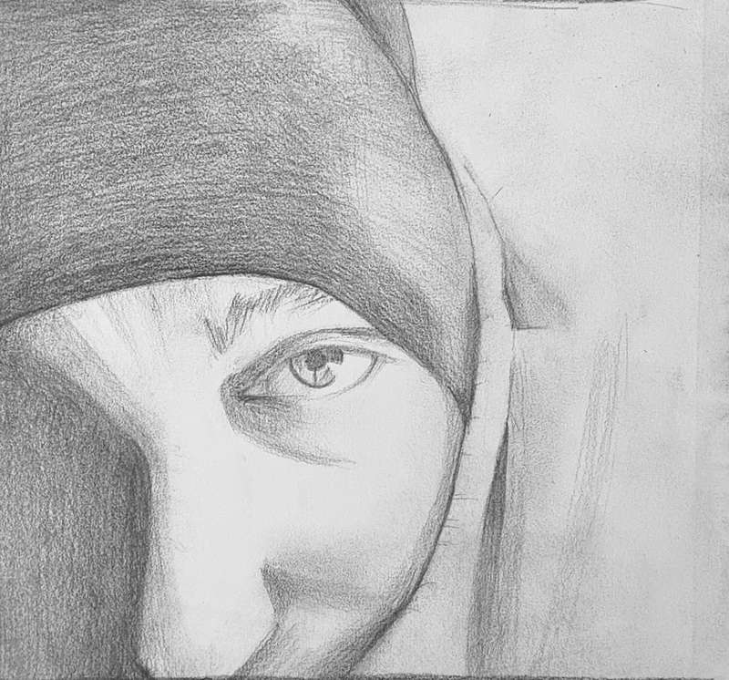
Dancer
The body as instrument. Every tendon, every breath, every impossible position — captured in the honest light of reality.
Realism
Focused Mind
Concentration made visible. The intensity of thought, the power of presence — a portrait of determination.
Realism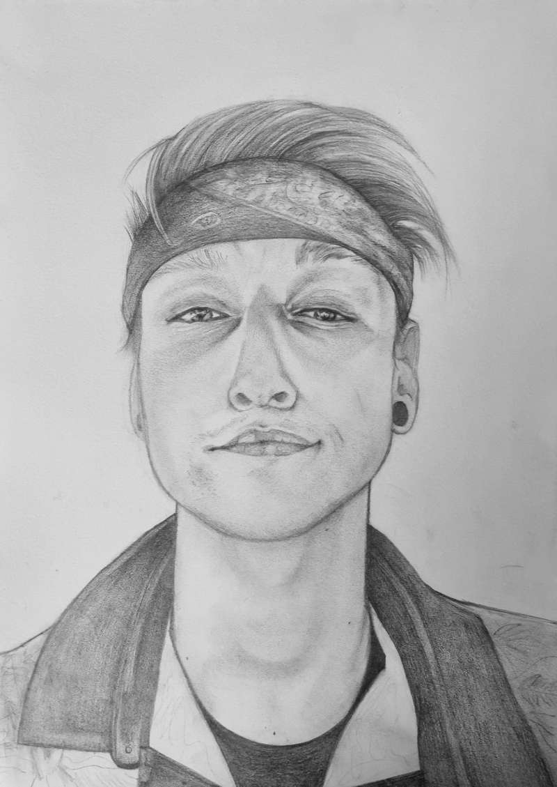
Free Spirit
Wildness contained just enough to frame. The untamed soul looking back at you, daring you to look away.
Realism
Mood
Emotion without filter. The raw truth of a moment, captured before the mask could be applied.
Realism
Mood 2
The other side of feeling. When emotion shifts and the light changes — the same soul, different weather.
Realism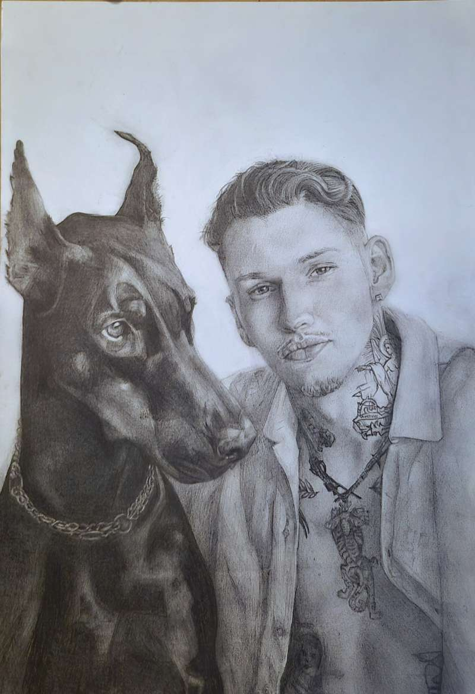
Portrait
The art of seeing. Not just a face, but a life — every scar, every smile line, every story written in skin.
Realism
Portrait Session
The conversation between artist and subject. A collaboration of gazes, where the sitter becomes the storyteller.
Realism
Quiet Confidence
Strength without shouting. The power of someone who knows their worth — no need to prove, only to be.
Realism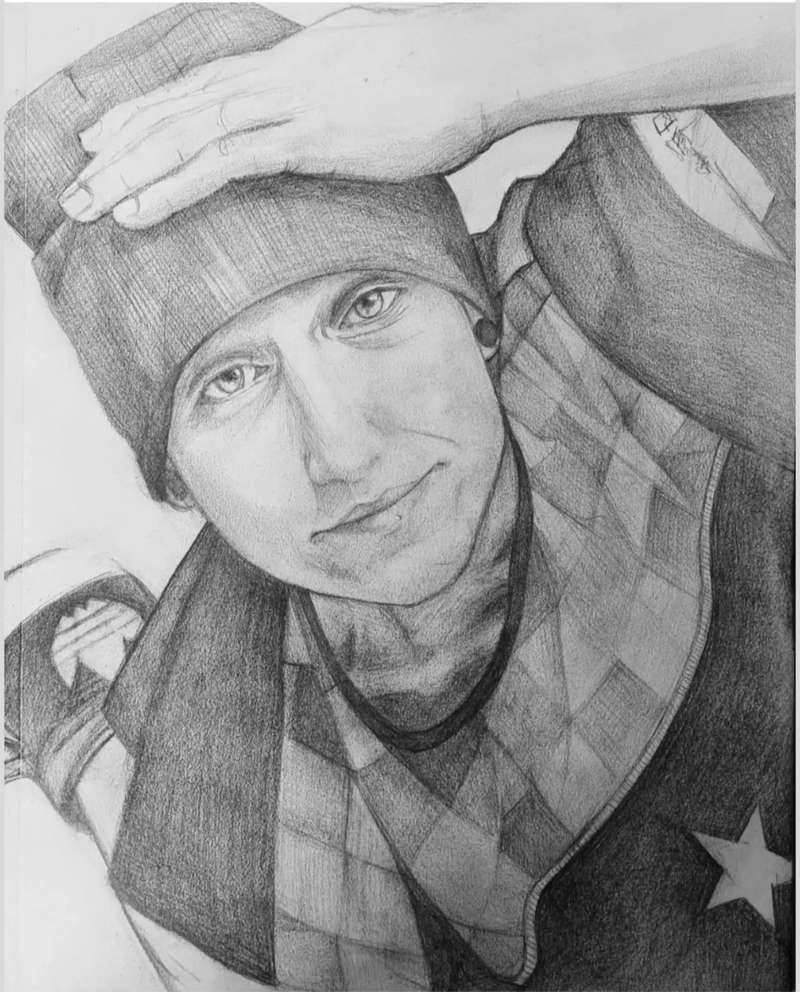
Quiet Moment
Peace captured in graphite. The rare instant when the world holds its breath, and the subject simply exists.
Realism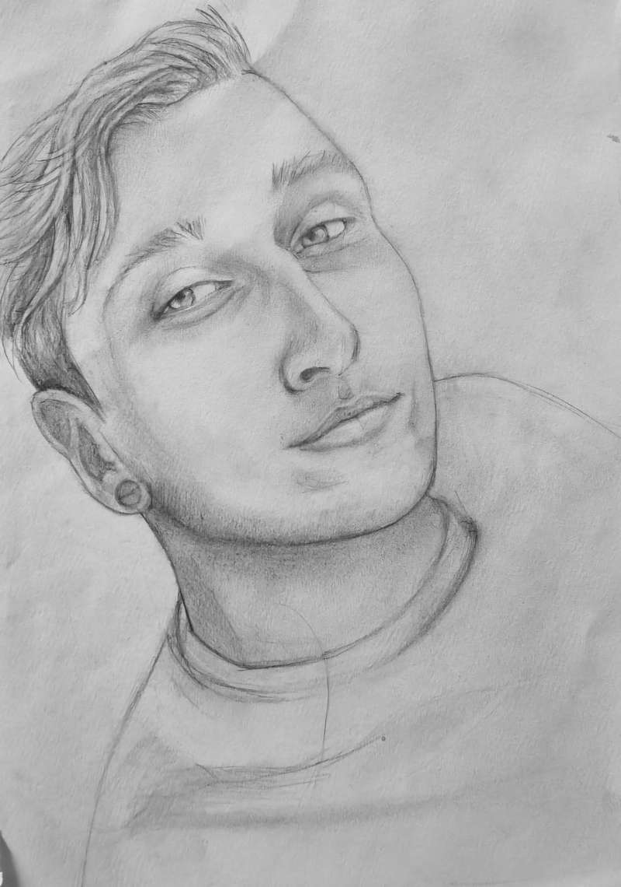
The Dreamer
Eyes that see beyond the room. The portrait of someone whose mind is always elsewhere — visiting better worlds.
RealismThe Storyteller
The face that holds a thousand tales. Every line is a plot twist, every shadow is a secret.
Realism
Too Cool
Attitude as architecture. The effortless swagger of someone who knows that rules are just suggestions.
RealismWork
The labor of creation. Hands that build, eyes that judge, the honest toil of making something from nothing.
RealismChilling
The art of doing nothing. A study in relaxation, where the body surrenders and the mind wanders free.
Realism
Tomorrow
The face of the future. Hope and uncertainty in equal measure, looking ahead with eyes that have seen both.
Realism
Horse
Freedom in simple strokes. The unbridled spirit of the wild, painted with the honest hand of someone who never forgot how to dream.
Naive
Tree
Roots that remember childhood. The tree as friend, as shelter, as witness — painted with the uncomplicated love of simpler eyes.
NaiveTree Monster
The friendly giant in the backyard. Where childhood fears become playground companions, and the dark is just a different kind of light.
Naive
Yang
The artist behind the vision.
Artist
Yang - Exhibition
Where the work meets the world.
Artist
Artist at Work
Creation in real time.
Artist
Studio Moments
Behind the curtain of creation.
Artist
Sculpture Collection
Three dimensions of imagination.
Artist